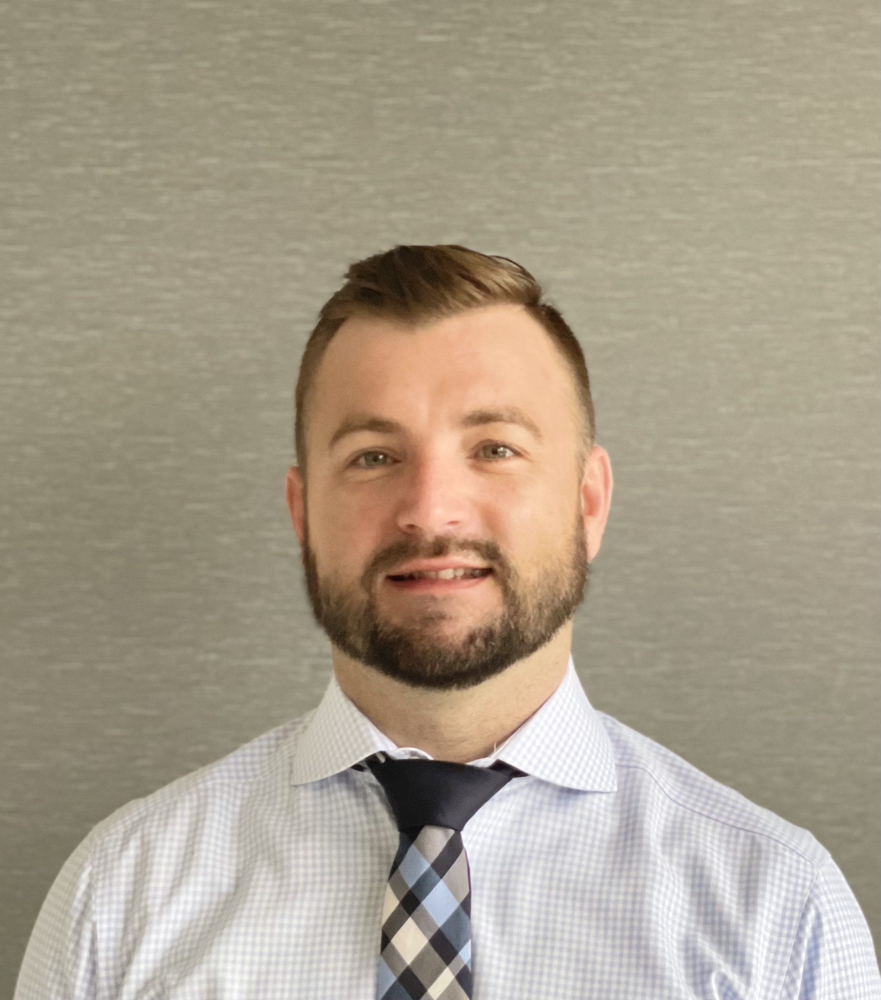

VITALY S. BORODIN, M.D.

Summary
American Board of Pathology certifications in Anatomical/Clinical Pathology, Molecular Genetic Pathology (fellowship), Cytopathology (fellowship). Practicing cytopathology, gynecological pathology, general pathology. Interested in molecular and digital pathology.
Working experience / Clinical training
- 01/2023 - Present: Brandon Memorial HCA Hospital, PRN cytopathologist, general pathologist.
- 04/2023 - Present: Fawcett Memorial HCA Hospital, PRN cytopathologist, general pathologist.
- 08/2022 - Present: Florida Woman Care laboratory, PRN GYN pathologist.
- 04/2022 - Present: Indian River Cleveland Clinic, PRN cytopathologist, general pathologist.
- 02/2022 - 04/2022: SaraPath diagnostics, general pathologist.
- 07/2018 - 01/2022: Florida Woman Care laboratory, section director of cytology and molecular department (NIPT validation), GYN
pathologist/cytopathologist.
- 07/2017 – 06/2018: Cytopathology fellowship, Geisinger Health System, Danville, PA.
- 07/2016 – 06/2017: Molecular Pathology and Genetics fellowship, Virginia Commonwealth
University, Richmond, VA.
- 07/2012 – 06/2016: Resident Physician, Anatomic and Clinical Pathology, Hahnemann University Hospital, Philadelphia,
Drexel University College of Medicine, Philadelphia, PA.
Education/ Training courses/ Certifications
- 06/2023: Digital Pathology certificate of completion.
- 04/2020: Applied data science certificate from Emeritus (Columbia University Executive Education).
- 12/2019: Gynecological pathology course at Vincent Academy of Pathology.
- 07/2016: Molecular Pathology Laboratory Practicum, VCUHS, Richmond, VA.
- 02/2013: American Association for Clinical Chemistry, Fundamentals of Molecular Pathology Course.
- 08/2011 – 06/2012: Master of Science in Histotechnology, Drexel University School of Medicine, Philadelphia, PA.
- 06/2002: A certificate of recognition from the Health Ministry of Kyrgyz Republic for achieving high academic
performance and being ranked the fifth in the class of 74 in the year 2002.
- 06/1996 – 07/2002: Doctor of Medicine, Magna cum laude, Kyrgyz Russian Slavic University (KRSU) School of Medicine, Bishkek, Kyrgyzstan.
Teaching
- 03/2013 - 08/2014: Hematopathology and cardiovascular pathology. Audience: second-year medical
students and pathologists’ assistant students. Drexel University College of Medicine, Philadelphia, PA.
- 08/2011 – 06/2012 Teaching assistant, Histotechnology. Drexel University School of Medicine, Philadelphia, PA.
Research / Projects / Poster Presentations
- 11/2017: PathAI (Artificial Intelligence in Pathology): performing digital pathology slide annotations.
- 03/2018: The Immunohistochemical Evaluation of PAX-8 in Various Benign Fluid Specimens. Vitaly S. Borodin,
Fan Lin, Haiyan Liu. Geisinger Medical Center. (poster presentation at USCAP 2018).
- 11/2017: Clinical validation of TCRG gene Rearrangement Assay on Ion S5 XL Next-Generation Sequencing System
(poster presentation at AMP 2017).
- 11/2017: NeGeSeI – all-purpose decision support tool for the clinical management of next generation sequencing assays in
the clinical laboratory. Vernell S. Williamson, PhD, Adam Kusmirek, Sundar V. Gadepalli, PhD, Irene Gonzalez,
Laura Gonzalez-Malerva, PhD, Andreaa Poppa MD, PhD, Vitaly S. Borodin, MD, MHS, Oana C. Rafeal-Rosca,
MD, Chen Yang, PhD, Maria F. Sábato, Christopher N. Vlangos, PhD, Catherine I Dumur, PhD, Andrea Ferreira-
Gonzalez, PhD. (poster presentation at AMP 2017).
- 11/2017: Lung and Colon Adenocarcinoma Mutational Landscape in a Tertiary Academic Healthcare Center.
Oana C. Rafael-Rosca, MD, Vernell S Williamson, PhD, Adam Kusmirek, Vitaly S. Borodin, MD, MHS, Laura
Gonzalez-Malerva, PhD, Andreea Popa, MD, PhD, Chen Yang, PhD, Fernanda Sábato, Christopher N. Vlangos,
PhD, Andrea Ferreira-Gonzalez, PhD. (poster presentation at AMP 2017).
- 05/2014 G. Nguyen et al. Coronary neovascularization of a non-cardiac tumor. Poster presentation, Drexel University.
- 12/2013: T. Bias, BS, Phar.D., BCPS, AAHIVP, V.S. Borodin MD. Utilization of Rapid Molecular Diagnostic Testing for
identification of Microbes and Optimization of Antimicrobial Selection in a Tertiary Care Academic Medical Center.
- 12/2013: D. Diaz PhD, M. S. Weingarten MD, V.S. Borodin MD. In-vivo validation of frequency domain diffuse infra-red
spectroscopy for tissue injury assessment. Wound Healing Society conference.
Publications
- 03/2018: King L, Gogoi RP, Hummel C, Smith A. Malignant Brenner tumor: Two case reports. Case Rep Womens Health.
2018;20:e00082. Published 2018 Oct 13. doi:10.1016/j.crwh.2018.e00082. (Contributor).
- 04/2015 T. Bias, BS, PharmD, BCPS, AAHIVP, C. Emery, MD, V.S. Borodin MD. Use of the Nanosphere Verigene®
Gram Negative Blood Culture (BC-GN) Test for More Rapid Bacterial Identification and Antimicrobial
Optimization.
- 03/2014 D. Diaz, Dr. M. S. Weingarten, Dr. V.S. Borodin. In-vivo validation of frequency domain diffuse infrared
spectroscopy for deep tissue injury assessment. Wound Repair and Regeneration 22(2):A66-A66 March 2014.
Board Certifications and Licensure
Board certifications
- 07/2018: American Board of Pathology: Cytopathology.
- 09/2017: American Board of Pathology: Molecular Genetic Pathology.
- 07/2016: American Board of Pathology: Anatomic Pathology and Clinical Pathology.
- 10/2010: ECFMG Certificate (Educational Commission for Foreign Medical Students), Philadelphia, PA.
Licensure
- 04/2018 – Present: Unrestricted medical license (ME 135873, Florida)
- 02/2016 – 12/2018: Unrestricted medical license (MD457069, Pennsylvania).
- 07/2017- 06/2018: Training medical license (MT201400, Pennsylvania).
- 07/2016 – 06/2017: Training medical license (0116028958, Virginia).
Examinations
- 04/2011: TOEFL internet-based test, Allentown, PA.
- 01/2011: USMLE STEP 3, Allentown, PA.
- 08/2010: USMLE STEP 2, Clinical Skills, Philadelphia, PA.
- 02/2010: USMLE STEP 2, Clinical Knowledge, Bangkok, Thailand.
- 10/2008: USMLE STEP 1, Basic knowledge in medicine, Dubai, UAE.
Professional memberships
- American Society of Cytopathology
- College of American Pathologists
- United States and Canadian Academy of Pathology
- Digital Pathology Association
- International Society of Gynecological Pathologists
- Association for Molecular Pathology
Hobbies
Contact me
Vitaly Borodin. All rights reserved ©